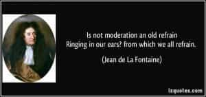

< < < Back
The Undeniable Importance Of Sexual Self-Regulation – Return Of Kings
If you do not conquer self, you will be conquered by the self. – Napoleon Hill, Think And Grow Rich
Balance is one of the core defining factors of all life in the universe. Without it, probably life would simply not exist to begin with. Since balance remains one of the greatest and defining secrets of a fulfilling life, its influence also extends to other aspects of life as well, and human sexuality is no exception.
There is a balance for everything around us, which when tampered with will produce problems. In today’s degenerate societies where unlimited sex is increasingly touted as a “self value” and happiness-validating ideal worth striving for, we’ve already seen how unrestrained sexual degeneracy and imbalanced modern sexual roles are destroying both modern women and men.
But even if men are endowed with comparatively longer sexual lives and drives compared to women, it becomes very important to acquire mastery over and regulate this incredible but finite power at our disposal—so that we don’t end up being slaves to our passions or dissipating it recklessly to invite unnecessary hassles which could threaten us in the long run.
When the pursuit of pleasure becomes an ensnaring shackle
The desire for sexual expression is possibly the most powerful need of man, due to its unparalleled creative potential, and thus has fascinated humanity since antiquity. However, unregulated use of it can undoubtedly threaten – if not destroy – a man’s health, mind, status, resources and even existence in the long run.
It’s undoubtedly easier to subdue others, but what can be said when one’s own lust becomes one’s own greatest enemy in personal self- development? Only a few lucky ones can escape unregulated sexuality’s limiting after-effects post-pleasure, but for the rest, there is no substitute for sexual self control.
But because men lack self control and wisdom in harnessing the incredibly powerful natural gift of sexuality, what we commonly find is the servitude of men to those who would provide the gratification of that need, which is aptly expressed by Chinweizu:
There are five conditions which enable women to get what they want from men: women’s control of the womb; women’s control of the kitchen; women’s control of the cradle; the psychological immaturity of
man relative to woman; and man’s tendency to be deranged by his own excited penis. These conditions are the five pillars of female power; they are decisive for its dominance over male power. Though each is recognized in popular jokes and sayings, their collective significance is rarely noted.
There is a joke which goes thus:
1st woman: The way to a man’s heart is through his belly.
2nd woman: Aren’t you aiming a few inches too high?
This joke pays tribute to how the womb and the kitchen control the feelings of men. A man can be controlled by the hunger in his belly, and by the other hunger which flares up just below his belly. Consequently, he can be manipulated by whoever controls the kitchen which feeds him, or by whoever carries the womb through which he craves to procreate. – The Anatomy Of Female Power
The message is simple and clear: barrage a man sexually enough to soften and enslave him. However, these conditions can still be effectively dealt with by taking the red pill and learning game.
Modern dating, just like life’s unfairness, constantly throws amoral power games which test a modern man’s mettle; thus to acquire mastery of over his destiny and freedom in that context, sexual regulation thus acquires paramount importance for him.
To release or not to? The tricky challenge of sexual regulation

Undoubtedly, one of the greatest battles a man wages in his own life is the one to seek control over his own lust. But sexual self-regulation need not mean unnaturally strangulating it completely, for there is no unnatural perversion worse than sexual self-repression. When pushed too far, this practice itself can be as unhealthy as unchained promiscuity.
At the same time, with the increasing failure of modern marriages – the erstwhile socially legal and traditional “channels” for sexual regulation – are itself eroding away, it then becomes increasingly important for modern men to learn game to create viable sexual options for their own sexual expressions.
Additionally, there are many factors which affect a man’s sexuality and its expression: age, health, intelligence, personal tastes, the quantity and quality of his sexual options, the societal environment and culture he finds himself in and how it indoctrinates him, and the personal evolution of his own masculinity through time.
Out of these factors, modern over-sexualized societies (and women) often excel in indoctrinating and baiting him to lose his sexual self control and wisdom.
For e.g. “Use it or lose it” – modern men are constantly barraged to this common societal shaming ploy which seeks to dwarf men to the state of human dildos who are programmed to foolishly yield to their own desires and submit themselves to sub-standard women, throwing both caution and personal sanity to the wind. But what are conveniently ignored is “when to use it”, and that the more a man foolishly yields to societal indoctrination to lose his sexual self-control, the easier it becomes for the modern societal matrix to control him.
Additionally, a lot of men shuttle between two extremes: either they dissipate their sexual power uncontrollably, or they simply keep frustrating their sexual expression by over thinking and over-analysis. This is again due to the lack of game knowledge and social intelligence, and again both these extreme approaches often contribute significantly to the growing modern phenomenon of male sexual desensitization.
The true secret of sexual regulation is that of detached wisdom, sexual timing, willpower and proper discretion. It is extremely important to acquire and imbibe these virtues, more so for the neomasculine man, since sexual self regulation is an important tool in his arsenal to outlast the evanescent self-destructing society which he often confronts.
Conclusion

A man who isn’t a slave to his own lust cannot be controlled effectively by women. And sexual gratification should ideally not come at the cost of one’s own freedom in the long run. Game helps men to determine which women hold the best prospects with the least threat to his freedom, and also how to sidestep the associated pitfalls, both prior to and post-sex.
Moderation in every aspect of life need not always be praiseworthy, but when it comes to a powerful, influential, dynamic yet finite source like sexuality, it becomes extremely important to understand as to why mastering sexual self regulation is so necessary, and how to master it—for failure to do so has been the cause of many failures of promising men throughout history.
Acquiring the art of sexual self regulation thus remains an undeniable asset for the man on the road of personal development, and his subsequent harnessing of his own personal power.
Read Next: Notch Paradise vs Dream Girl Paradise


{kind=link}
{kind=link}